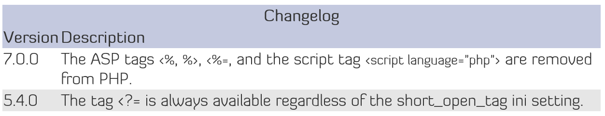
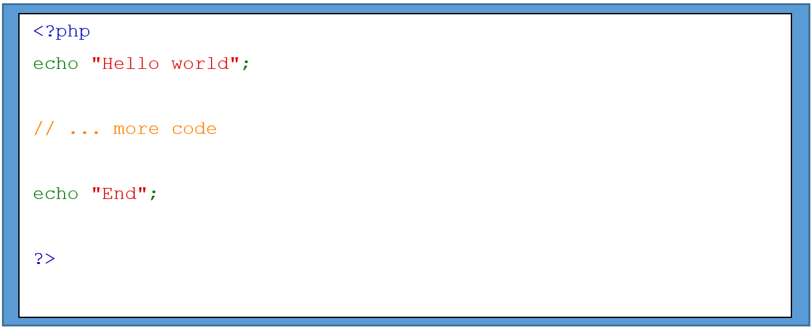
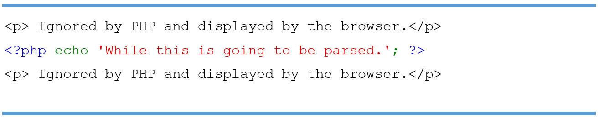

It is an open source scripting language that is widely used. PHP file can contain HTML, JavaScript, CSS, and PHP code. Scripts are executed on the server and returned to the browser as plain HTML.
PHP can generate dynamic page content, create, open, write,delete and close file on the server. It can add, delete, modify data in your database. It can send and receive cookies and can encrypt data.
The opening tag of php is <?php and ending tag is ?> which tells the PHP to start and stop executing the code between them. It allows PHP to be embedded in all sort of different document and outside this pair of tags is already ignored by the PHP. For a pure PHP code, it is preferred that closing tags are placed at the end so that there will be no unwanted effects that will buffer while the program is executing.
 Every code outside the PHP tag is ignored which allows PHP to have a mixed content. PHP can be embedded to an HTML file.
After the PHP interpreter hits the closing tag, it will start outputting the code next to it.
<?php if ($expression == true): ?>
This will show if the expression is true.
<?php else: ?>
Otherwise this will show.
<?php endif; ? >
PHP will skip the block where the condition is not met.